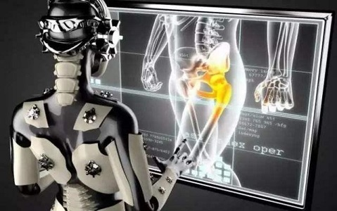

Research
I. Medical Image Analysis and PET/CT Imaging

Medical Image Analysis
Medical image analysis is the process of extracting meaningful information from medical images, often using computational methods. Some of the tasks for medical image analysis are visualization and exploration of 2D images and 3D volumes, segmentation, classification, registration, and 3D reconstruction of image data. The images for this analysis can be obtained from medical imaging modalities such as x-ray (2D and 3D), ultrasound, computed tomography (CT), magnetic resonance imaging (MRI), nuclear imaging (PET and SPECT), and microscopy.
PET/CT Imaging
Hybrid positron emission tomography (PET)/computed tomography (CT) machines constitute major progress in the global management of cancer patients for the initial diagnosis, evaluation of treatment and prognosis, and for surveillance throughout the course of the disease and possible relapse. Radiologists and nuclear medicine physicians are often asked to perform a panel of imaging examinations as part of the initial staging or follow-up of cancer patients. Medical imaging must therefore integrate polyvalent skills enabling imaging specialists to understand and interpret all types of images.
II. Machine Learning and Computer Vision

Machine Learning
Machine learning (ML) is a type of artificial intelligence (AI) that allows software applications to become more accurate at predicting outcomes without being explicitly programmed to do so. Machine learning algorithms use historical data as input to predict new output values.
Computer Vision
Computer vision is a field of artificial intelligence (AI) that enables computers and systems to derive meaningful information from digital images, videos and other visual inputs — and take actions or make recommendations based on that information.
|